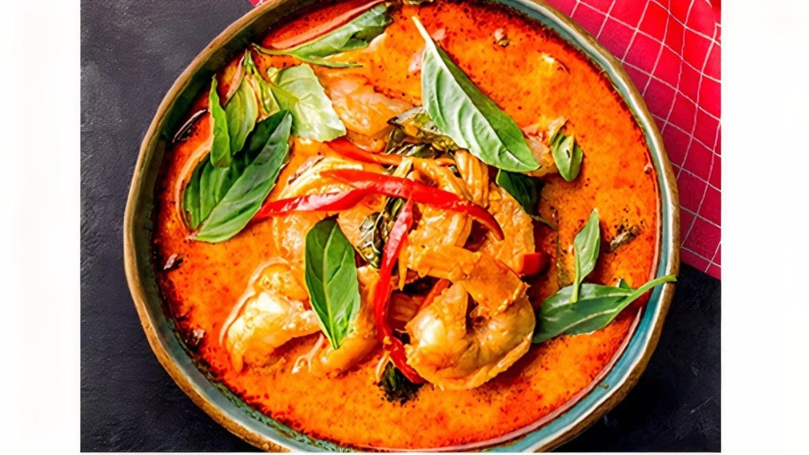

Noodles
Pad Kee Mao and Pad Thai. Served in generous takeout bowls.
Thai food truck · Bastrop, TX
Index of the menu
Pad Kee Mao, Pad Thai and red curry from a truck on Chestnut Street. Generous portions.

What to order
What we cook most.
Pad Kee Mao and Pad Thai. Served in generous takeout bowls.

Fried rice and stir-fried dishes from the menu, packed with fresh vegetables.

Golden-fried chicken wings, egg rolls and coconut shrimp with sweet and sour sauce.

From the online menu


4.6 / 5 · 16 Google reviews
1Bastrop needed Thai food, and we’re so glad this place opened! The dishes were full of flavor, and the ladies who run the stand were incredibly sweet and friendly. We had the Pad Thai and chicken wings, both SO good. We’ll definitely be back! Cute Patio to enjoy when the weather is nice as well.
2Fresh Thai food with great portion sizes. The best Thai in town and some of the best I've had in general. The Pad Kee Mao and Pad Thai are stellar, can't wait to try everything on the menu!
3My wife and I got the red curry and pad kee mao. The food was amazing and definitely agree it is the best Thai in the area. We have been looking for years and definitely don’t want this to go away. Please stay!
About
Appetizers, noodles, fried rice, stir-fries, curry, salads, desserts and drinks, all made fresh from the truck.
Friendly staff, generous portions and a cute patio for nice weather.

Visit
710 Chestnut St, Bastrop, TX 78602
Find us on Chestnut Street, with a patio for nice weather. Closed Monday and Tuesday.